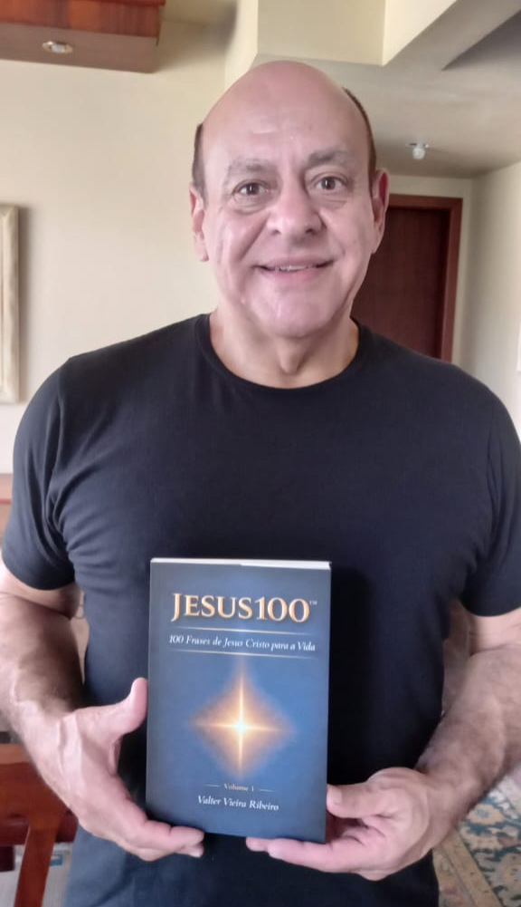

Valter Vieira Ribeiro
"Você sabe o que é certo fazer…
mas não consegue viver isso no dia a dia?"
O JESUS100 transforma 100 frases de Jesus Cristo em ação concreta para o seu cotidiano. Não simplifica o Evangelho, torna-o praticável.
"Julgar é rápido. Condenar é fácil. Compreender exige maturidade."
"A dureza aprisiona. A misericórdia liberta."
"Este livro não será apenas lido. Será vivido."
Muitas pessoas conquistam sucesso, reconhecimento e informação e ainda assim sentem falta de algo essencial: sentido e direção interior.
Muitas vozes disputam atenção. Muitas ideias prometem solução. Poucas oferecem fundamento sólido quando surgem perdas, conflitos e incertezas reais.
Esse vazio não nasce da falta de sucesso. Nasce da ausência de direção, coerência e propósito interior, algo que nenhum curso ou técnica resolve sozinho.
Você lê, reflete, ora, mas na segunda-feira o comportamento é o mesmo. O que transforma não é o conhecimento acumulado. É a prática consistente.
É um instrumento de disciplina espiritual simples e consistente. As palavras de Jesus atravessaram séculos não por tradição cultural, mas por profundidade existencial.
Confrontam o orgulho, consolam o aflito, orientam o perdido, fortalecem o fraco e desafiam o acomodado.
Cada frase é apresentada com reflexão e aplicação prática, para que a leitura não termine na compreensão, mas avance para a transformação.
"As palavras de Jesus não oferecem atalhos fáceis. Apresentam um caminho de consciência, verdade e vida com propósito." — Contracapa do JESUS100
Cada um dos 100 capítulos segue 5 passos que conduzem da leitura à transformação real. Ideal para leitura diária, pausas conscientes e momentos de decisão.
A palavra original de Jesus apresentada com contexto e reverência ao texto bíblico.
Uma meditação guiada que conecta o ensinamento à realidade da sua vida hoje.
3 ações práticas e concretas para transformar a frase em mudança real de comportamento.
Uma oração ou afirmação espiritual que consolida o ensinamento e fortalece a intenção.
Uma pergunta reflexiva que avalia sua postura atual e aponta o que precisa mudar.
Veja na prática como cada frase de Jesus se transforma em ação.
"Bem-aventurados os misericordiosos, porque alcançarão misericórdia."
— Mateus 5,7Reflexão
Você já cometeu um erro e desejou que alguém olhasse para além dele?
Julgar é rápido. Condenar é fácil. Compreender exige maturidade.
Todos desejam compreensão quando erram. Mas nem todos oferecem compreensão quando o erro é do outro. É mais fácil rotular do que restaurar. Mais cômodo manter a distância do que estender a mão.
Jesus não nega a existência da falha. Ele transforma o olhar sobre ela.
É interromper o ciclo da dureza. É escolher restaurar em vez de sentenciar.
Quando lembramos que todos somos frágeis, limitados e necessitados de graça, o julgamento perde espaço e a compaixão encontra caminho.
Quem pratica misericórdia torna-se mais humano. E o coração que aprende a perdoar torna-se mais leve.
Onde há misericórdia, nasce reconciliação. E onde há reconciliação, cresce a paz.
Aplicação Prática
Lembre-se de alguém que falhou com você e que ainda ocupa espaço de mágoa no seu coração.
Escolha olhar essa pessoa com mais compreensão do que julgamento, não para justificar o erro, mas para não deixar que ele defina tudo.
Pratique um gesto concreto de paciência ou perdão ainda hoje.
Afirmação / Oração
"Senhor Jesus, ensina-me a agir com misericórdia. Que meu coração reflita a graça que recebo, e não apenas a justiça que exijo."
Pergunta Reflexiva
Tenho sido mais rápido para julgar… ou mais disposto a compreender?
Este é apenas 1 dos 100 capítulos. Cada um com a mesma profundidade e aplicação prática.
Quero os outros 99 capítulosO que muda não é o conhecimento. É a atitude. Veja o que leitores dizem sobre a diferença entre saber e aplicar.
"Li sobre misericórdia e percebi que estava preso à mágoa de anos. Decidi perdoar uma pessoa do trabalho. O livro não me deu teoria, me deu um passo concreto para agir naquele mesmo dia."
"O método me tirou da teoria de vez. Hoje eu paro, leio, me pergunto e ajusto minha atitude. São 10 minutos diários que mudaram a forma como vivo minha fé. Muito mais do que qualquer devocional."
"Passei anos lendo a Bíblia sem saber como aplicá-la. O JESUS100 me deu estrutura. As perguntas reflexivas me incomodam do jeito certo, me fazem olhar para o que preciso realmente mudar."

autor-livro.jpgValter vive o cristianismo há muitos anos. Ao longo de sua carreira, dedicou-se a áreas como PNL, Coaching e Desenvolvimento Humano, ferramentas que o ajudaram a enxergar os ensinamentos de Jesus sob uma ótica prática e transformadora. Sua convicção é simples e poderosa: "Não é apenas um livro para ser lido, mas para ser vivido."
"Vivemos tempos de excesso de informação e escassez de direção. Muitas vozes disputam atenção. Muitas ideias prometem solução. Mas poucas oferecem fundamento sólido quando surgem perdas, conflitos e incertezas reais."
— Prefácio do JESUS100Não para simplificar o Evangelho, mas para torná-lo praticável no cotidiano.
Conversar com o autor
Clareza em meio à confusão. Serenidade em meio à pressão. Direção em meio às incertezas.
Um convite a viver com mais fé, maturidade e coerência, por dentro e por fora.
Compra segura · Entrega imediata (digital)